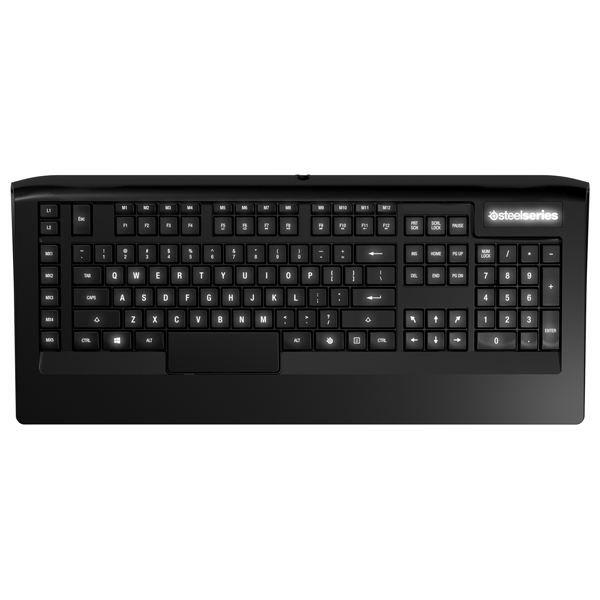
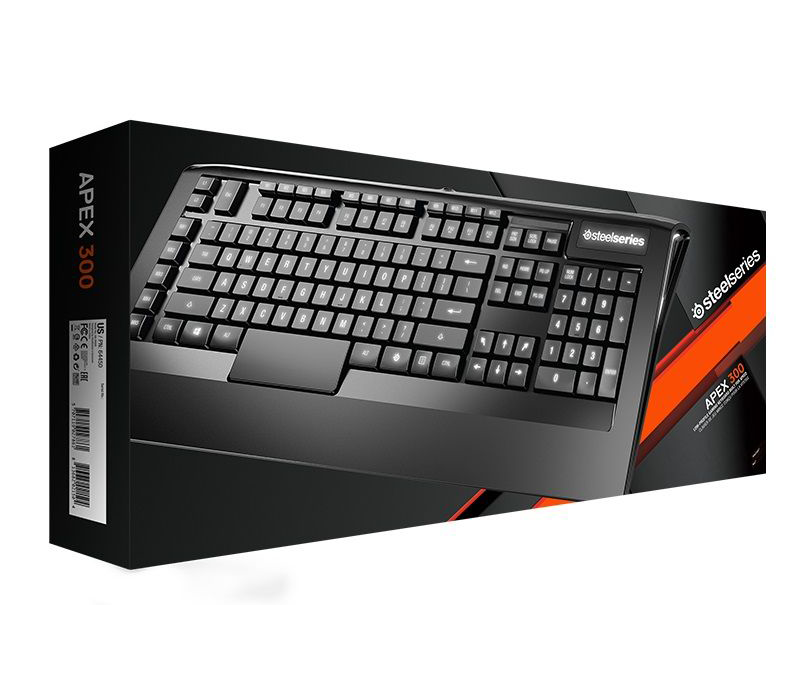

Добро пожаловать на один из крупнейших интернет-магазинов игровых девайсов в СНГ
SteelSeries Apex 300


SteelSeries APEX Raw создана для того, чтобы удовлетворить все ваши потребности и даже больше. Клавиатура имеет белую подсветку, работающей в восьми различных режимах, и 17 двухуровневыми macro клавишами, которые приподняты для их удобного использования. Помимо этого тактильными клавишами выделена группа WASD для их быстрого нахождения, а также различными резиновыми подставками для нахождения оптимального угла наклона клавиатуры и системой Anti-Ghosting для одновременного нажатия вплоть до 20 клавиш.
- Тип: игровая
- Вид соединения: проводная
- Тип клавиш: мембранные
- Тип соединения: USB
- Подсветка клавиш: есть
- Подставка для запястья: встроенная
- Количество дополнительных клавиш: 21
- Встроенный USB-хаб: 2-портовый
- Ширина: 560мм
- Программируемые клавиши: есть